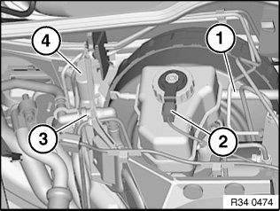
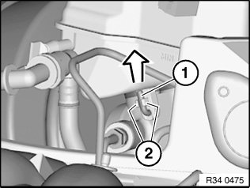
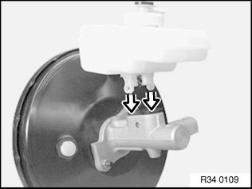

34 31 181 Removing and Installing/Replacing Expansion Tank for Hydraulic Brake Actuation
34 31 181 Removing and installing / replacing expansion tank for hydraulic brake actuationNecessary preliminary tasks:
^ Read and comply with General Information.
^ Remove lower section of microfilter housing

Note:
Extract brake fluid out of expansion tank.
Use a suction bottle used exclusively for drawing off brake fluid.
Do not reuse drawn out brake fluid.
Pull off supply hose (1) of clutch hydraulic system if necessary.
Unfasten plug connection (2) and disconnect.
Unlock quick-release fastener (3) and disconnect vacuum line.
Feed brake line out of rubber grommet and remove cover (4).

Unclip locking pin (1) from retaining lugs (2) and pull out locking pin.
Pull expansion tank in direction of arrow vertically out of brake master cylinder.

Important!
Check rubber plug in brake master cylinder for damage and replace if necessary.
Push the expansion tank vertically onto the master brake cylinder.
After Installation:
^ Bleed braking system